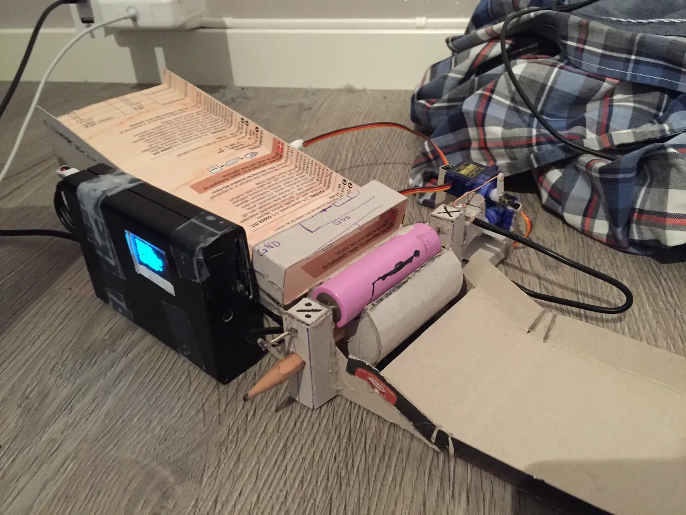
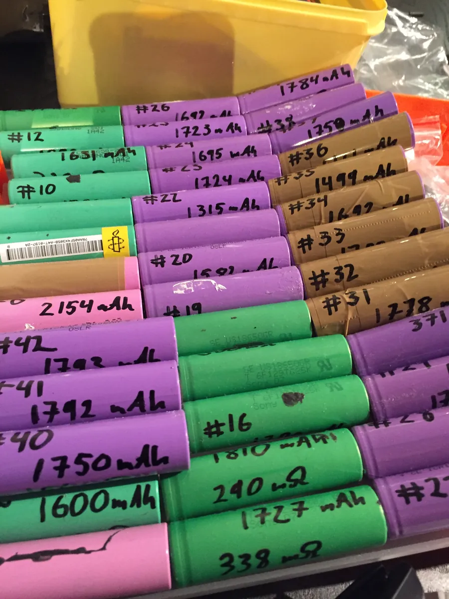
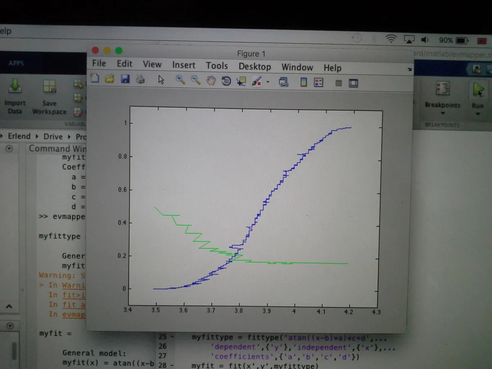
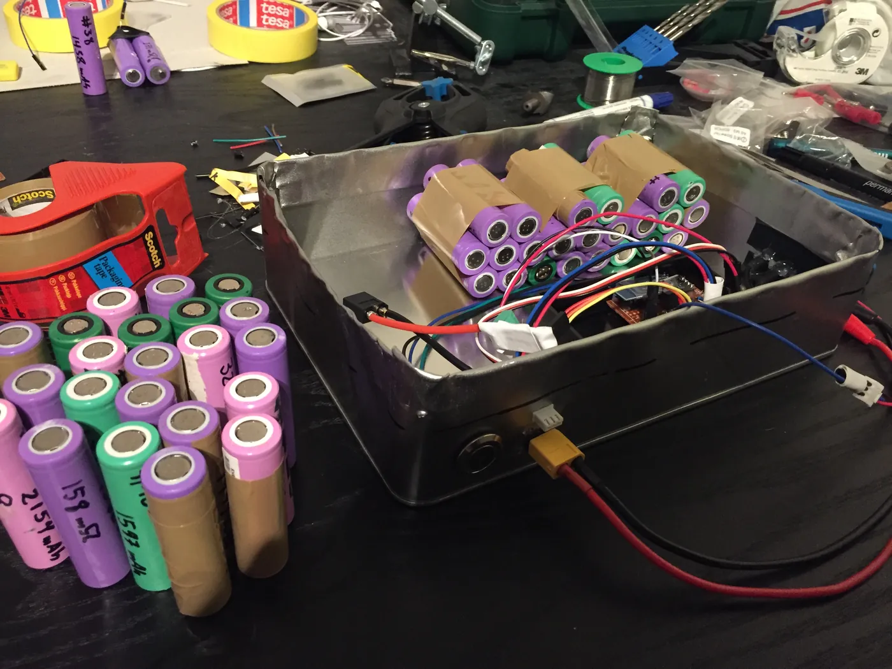
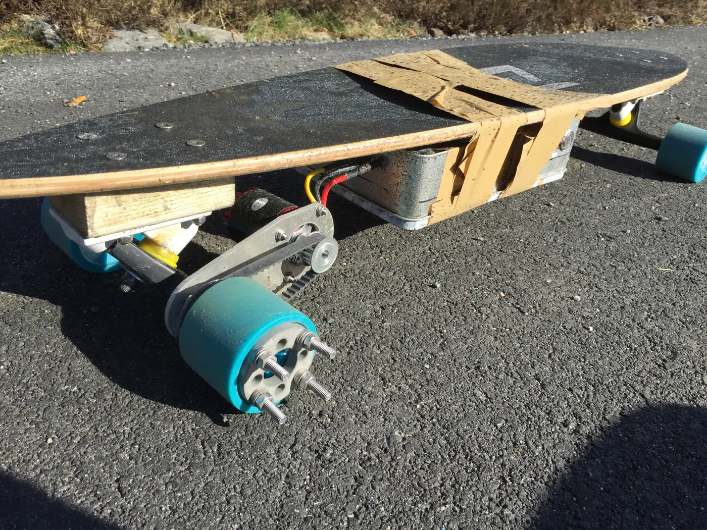

2017
Battery tester
Lithium-ion 18650 cells are common in old laptop batteries, so you can often get them for free at recycling stations. Older cells can be worn out, so I built a machine that measures the health of each one.

The machine feeds in one cell at a time, discharges it, charges it back up and logs its capacity and internal resistance. Then it loads the next cell automatically.
Bad cells were discarded. The good ones were grouped into a pack based on how much capacity each had left.


The longboard
I used the good cells to build an electric longboard. The throttle is a phone app I wrote, which talks to a Bluetooth module on the board.


It looks like shit, but it taught me the basics of electronics, soldering, app development and Arduino, and I rode it to work for a whole summer.